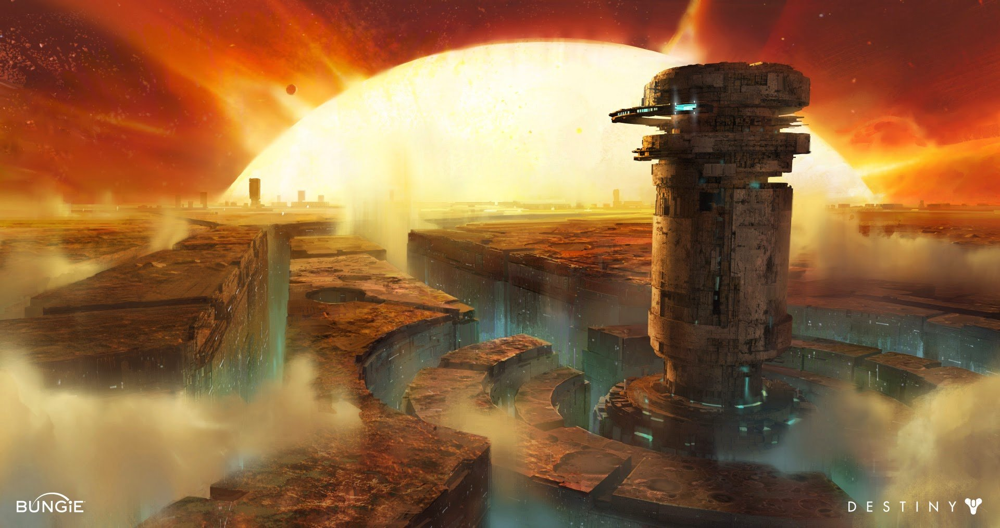
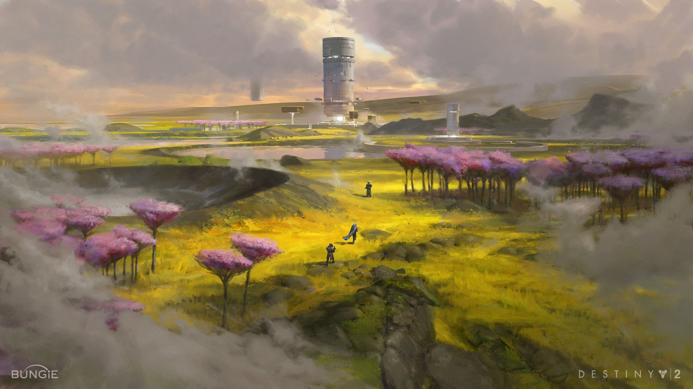

Mercury
Legends say that Mercury was once a garden world. Now its surface, baked in the Sun's glare, is honeycombed with forgotten Vex structures. No life stirs here. Not anymore.
There was no one there when we arrived. We approached peacefully and kept our weapons holstered. The sights we saw... Executor, Mercury is a beautiful place, and forbidding. On descent we mapped sprawling patterns of Vex light, an entire metropolis of unknown purpose. The Spires strobe with lightning. A mist of burnt rock or some other effluvia blows across landscape cut into circuits the size of cities. There is an atmosphere, as in all post-Traveler records. The Vex have not disposed of it. From the surface the Sun is too large and too dim. Perhaps it is the influence of the Vex constructs distorting the image. Perhaps Mercury is in many places at once. We stood for some time staring into the solar fire. I hold myself responsible for the delay. The site we were invited to is clearly a Cult of Osiris camp. We found stores of Glimmer, equipment, and books. A grounded ship of conventional design rests unguarded. The architecture is clearly, self-evidently Vex, but it has been ornamented extensively with fabrics and ritual objects of unknown provenance. I became convinced during the inspection that we were being watched. We ordered our Ghosts to stay close. One of my Fireteam suggested we search for connections to the Trinary Star cultists, but if they exist we couldn't see them. We inspected the carvings and trinkets left by the Osiris cultists. All of us began to depart from ordinary experience. My Exo teammate described the sense that she was buried beneath an enormous, operating mass— locked up in a tiny crevasse at the bottom of a labyrinth or mechanism. My Awoken teammate felt an ongoing sense of deja vu: her actions were precessed by an infinite echo, an anticipation of all her choices. She became volatile and erratic. She insisted that we were surrounded. I remember a low ringing sound and a sense of numb filth, like gravel rubbed into a wound. I experienced a sense of immanence, as if I was bleeding into the world around me. It was uncomfortable and profoundly alienating. I perceived all my actions as determined and inevitable. My Ghost commented that the Traveler had made something of this world, and then Vex had eaten that something. We gathered the treasure left for us and departed as quickly as we could. This concludes my report. May it bring some advantage to our cause.